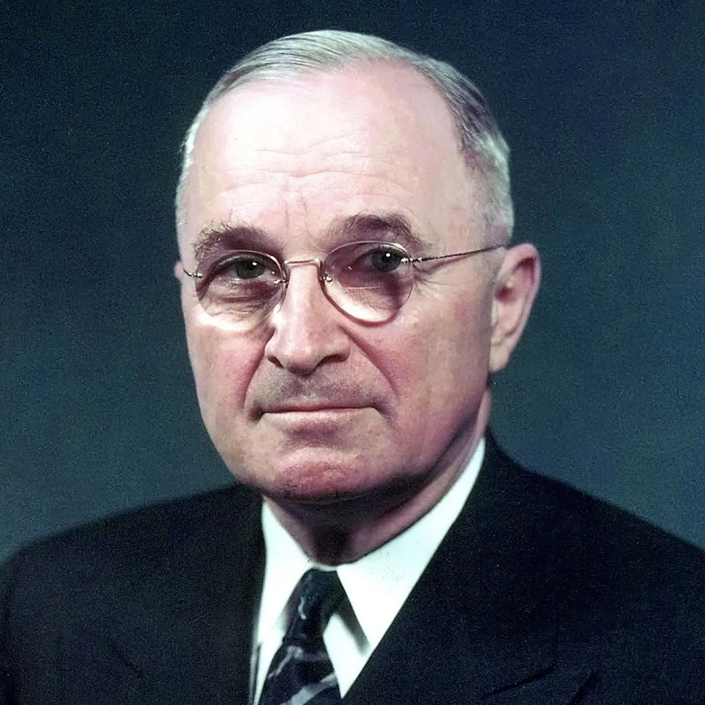
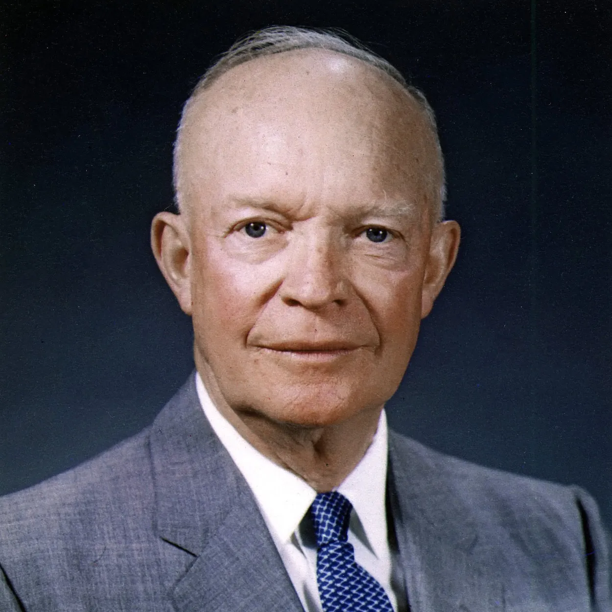
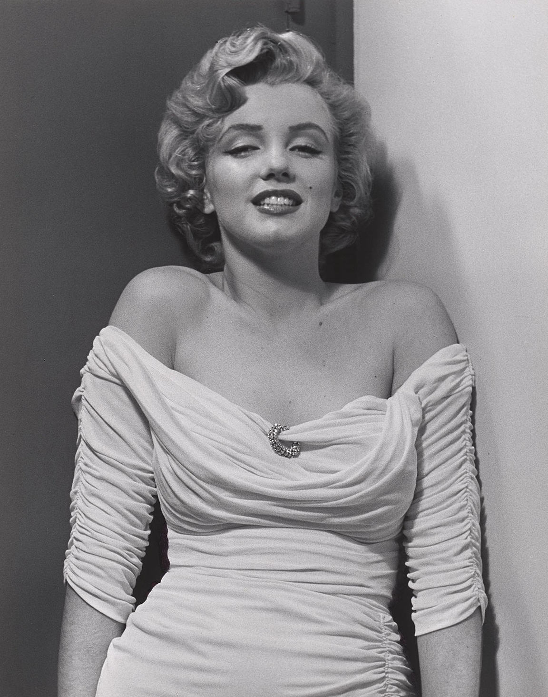
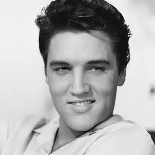
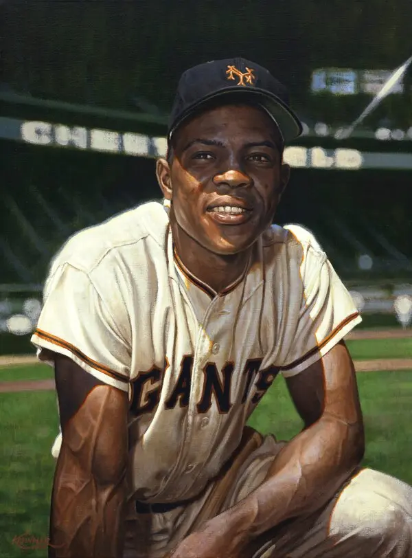
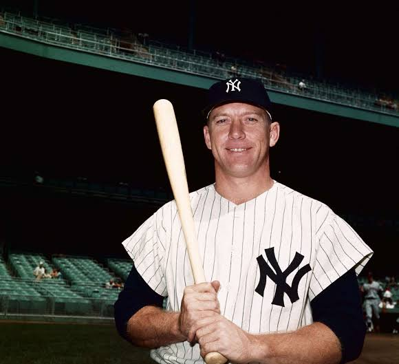
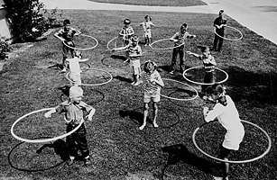
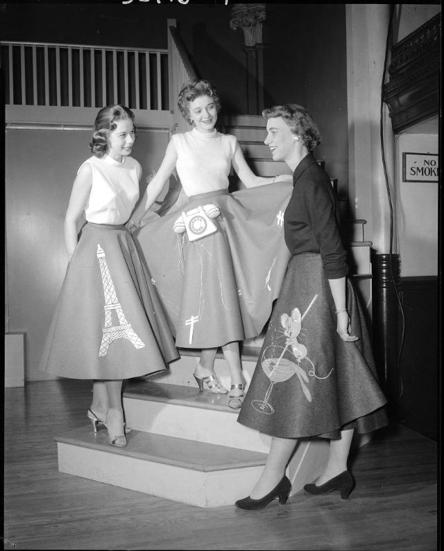
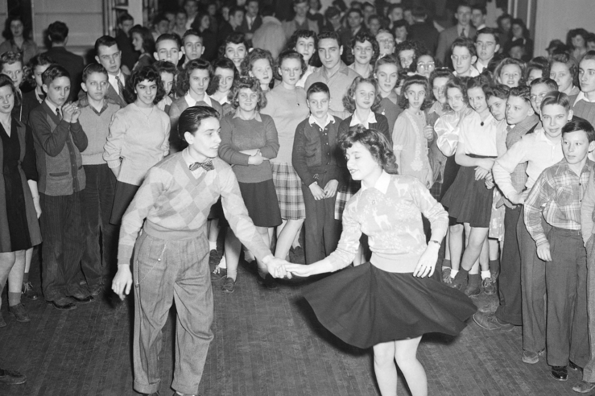
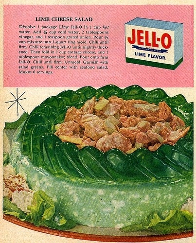

Presidents
Harry S. Truman
Photo

-
Issued executive orders desegregating the armed forces and prohibiting
racial discrimination in federal employment
- From 1951 to 1952, he was the first supreme commander of NATO
Dwight D. Eisenhower
Photo

-
Main goals as president:
- Reduce federal deficits
- Contain the spread of communism
Celebrities
Marilyn Monroe
Photo

-
Converted to Judaism in 1956 after marrying playwright Arthur Miller,
who was also Jewish
- From 1951 to 1952, he was the first supreme commander of NATO
- Dependence on “downers”/barbiturates
- She struggled with endometriosis
- Caused infertility
- Mental health issues
Elvis Presley
Photo

- Nicknamed “the King of Rock 'n' Roll”
- Inducted into five halls of fame
Willie Mays
Photo

- Nicknamed “Say Hey Kid”
- Played in major league baseball
Mickey Mantle
Photo

- Retired due to bad injuries
- Won a Golden Globe
Music
Top 10 Songs
- Bill Hailey & His Comets, "Rock Around the Clock," 1955.
- Bobby Darin, "Mack the Knife," 1959.
- Elvis Presley, "Jailhouse Rock," 1957.
- Nat King Cole, "Mona Lisa," 1950.
- Doris Day, "Que sera sera (Whatever Will Be Will Be)," 1956
- The Kingston Trio, "Tom Dooley," 1958
- Anton Karas, "Third Man Theme," 1950
- Elvis Presley, "Heartbreak Hotel," 1956
- Doris Day, "Secret Love," 1954
-
Les Paul & Mary Ford, "Vaya Con Dios (May God Be With You)," 1953
Top genres (1950s)
- Rock
- Doo-wop
- Rock and roll
- Rockabilly
Top genres (2024)
Fads
Hula hoops

Poodle skirts

Sock hops (people dancing in their socks)

Cat eye glasses
Putting everything in Jell-O (fruits, vegetables, lamb chops, etc)

Women wearing dog collars on socks
Famous Firsts
- Roger Bannister's 4-minute mile in 1954
- Laika the Soviet space dog launched into orbit in 1957
- Synchromesh gear changes in cars
- Car seat belts introduced
- Hula hoops became a craze
- First organ transplant
- First internal pacemaker